A foundation model for language-evoked brain activity
From speech alone, it predicts a person's brain response — even someone it has never seen.
It takes spoken audio and predicts the fMRI response it evokes across the cortex. With no data from a person it already captures auditory and core language cortex; ~10 minutes of that person listening then sharpens the higher-order language network. One model — trained on six brains, tested on 324 it had never seen across 16 studies.
No data from the participant (zero-shot): audio in, predicted speech-evoked fMRI out — for any new person, with nothing recorded from them.
·
A few minutes of their data (few-shot): ~10 minutes of that person listening tunes a tiny per-person adjustment, sharpening the prediction where individual brains differ most.
01Two ways to use one model
How much do you know about the listener?
One fact about the brain sets up everything below: speech-evoked responses are shared across people in auditory cortex, but become increasingly individual in higher-order language regions. That is why a single model can serve two very different situations.
Zero-shot · no data
A brand-new participant
Nothing recorded from this person. Audio goes in; their speech-evoked brain response comes out.
Predicts the cortical response for any new listener, with zero data from them
Captures auditory and core language cortex — the parts of the response people share
Few-shot · a few minutes
A little of their own data
Have the person listen for ~10 minutes. RABBiT tunes a small per-person adjustment and re-predicts.
~10 minutes of that person listening is enough to adapt
Sharpens exactly where brains differ most — the higher-order language network
02Result 1 · It behaves like a brain
It organizes like a brain.
Before asking how accurately RABBiT predicts, the first question is whether it predicts like a brain at all. It does. Two textbook signatures of the human language network fall straight out of its predictions on held-out data — with no anatomical supervision, and without ever being trained on these contrasts. That is what makes the accuracy in the next two sections worth trusting.
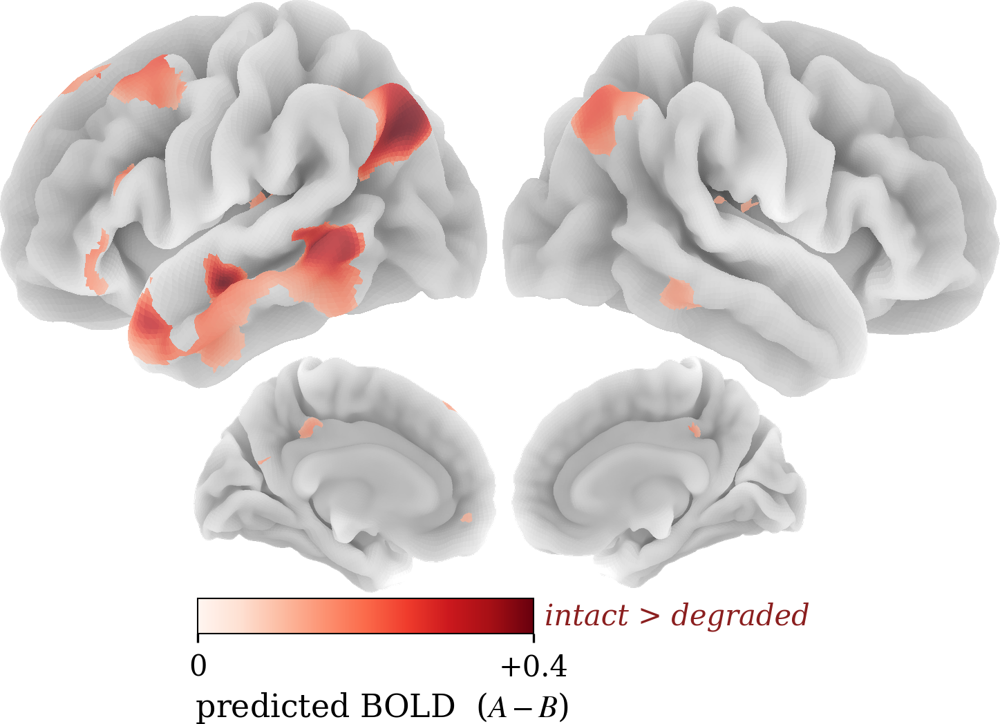
Fig 1Predicted intact − degraded speech (A − B on the colourbar).
A classic localizer
The language network, reproduced.
Give RABBiT the standard intelligibility contrast — the same speech, intact versus acoustically degraded — and difference its predicted BOLD, and a left-lateralized fronto-temporo-parietal language network emerges: inferior frontal, lateral temporal, inferior-parietal / angular.
Early auditory cortex, which responds to both, largely cancels — exactly as it should. RABBiT was never trained on this contrast or these stimuli.
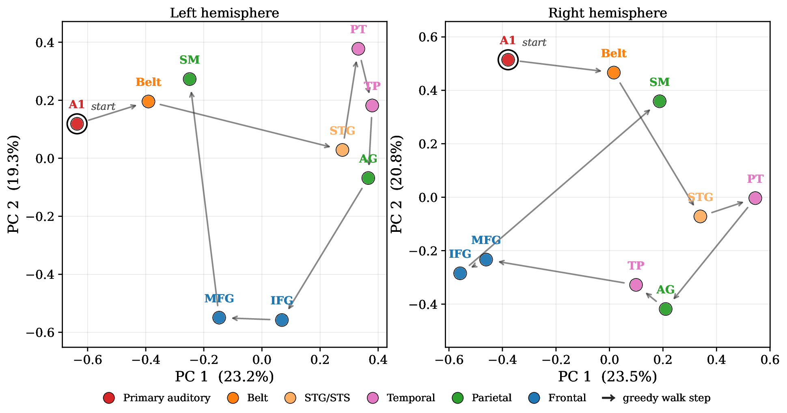
Fig 2Greedy similarity walk through the model's learned ROI representations.
Emergent hierarchy
It rebuilds the processing stream.
Each region has a learned representation inside the model. Stepping from primary auditory cortex to the most similar not-yet-visited region traces the canonical path — primary → belt auditory → STG / STS → parietal and frontal language regions.
The model was never told this anatomical ordering; that it falls out of representational similarity alone is the non-trivial part.
Together these make RABBiT usable as a computational model organism for language: a stand-in brain you can probe, contrast, and localize in — at the scale of hundreds of participants, without scanning each one. The next two sections measure how accurately it predicts those brains: first with no data from the person, then with ~10 minutes of it.
03Result 2 · Zero-shot — no data from the person
A new person's brain, from speech alone.
The hardest case: a participant RABBiT has never seen, with nothing recorded from them. Audio goes in; their speech-evoked fMRI comes out. Below — first the prediction on one held-out listener, then how it stacks up against the strongest alternatives across all 324.
With nothing recorded from this person, RABBiT already predicts their speech-evoked response across auditory cortex and the temporal language belt — the parts of the response that people share.
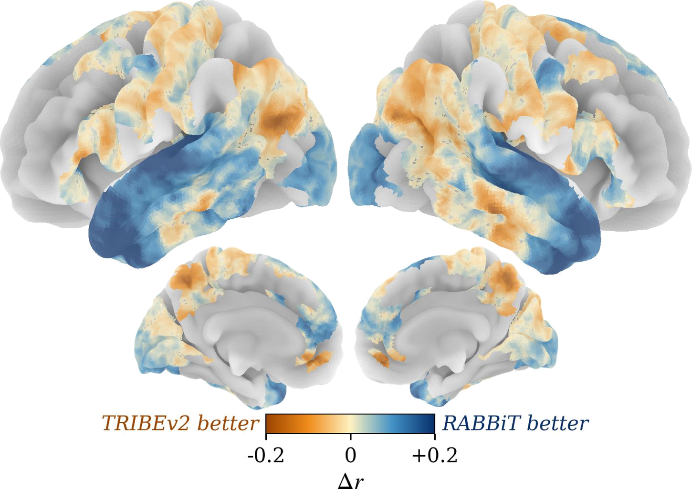
Fig 4Δr = RABBiT − TRIBEv2, −0.2 to +0.2 · blue ⇒ RABBiT better, orange ⇒ TRIBEv2 better.
vs a billion-parameter model
Ahead of a far larger model.
Head-to-head with TRIBEv2, a billion-parameter multimodal foundation model, RABBiT's zero-shot edge (blue) concentrates across auditory and temporal language cortex — the cortex that carries the speech-evoked signal.
And it gets there from only six training brains, against TRIBEv2's far larger training set.
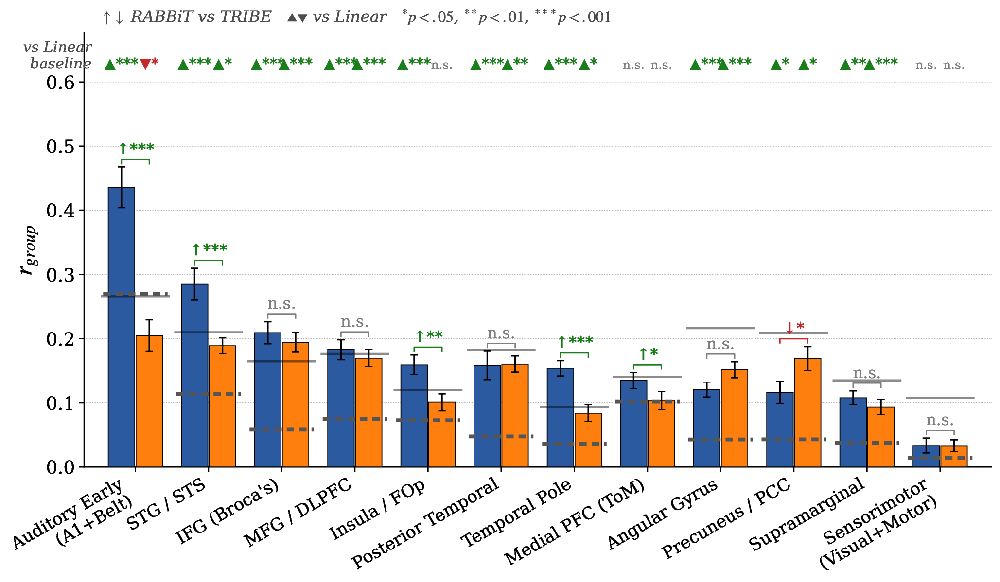
Fig 5Per-region zero-shot accuracy · RABBiT vs TRIBEv2.
Region by region
The advantage, quantified.
Region by region, RABBiT's biggest gains are in auditory and temporal language cortex, and it leads in several frontal regions (insula / FOp, temporal pole, mPFC). The two are comparable elsewhere; precuneus / PCC is the one region where TRIBEv2 significantly leads.
Visual and motor regions sit near chance for both — expected for an audio-only model.
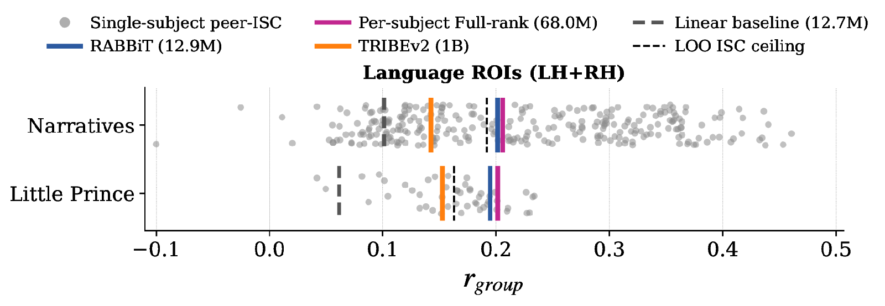
Fig 6$r_\text{group}$ across bilateral language ROIs · Narratives & Le Petit Prince.
vs the inter-subject ceiling
It reaches the inter-subject ceiling.
RABBiT (blue) reaches the leave-one-out consistency ceiling on Narratives and surpasses it on Le Petit Prince — on par with a 68 M-parameter per-subject readout, at 12.9 M. The 1 B-parameter TRIBEv2 and the linear baseline sit below.
This holds across all 324 held-out participants in 16 studies, not just the listener above. Gray dots are peer inter-subject consistency; the dashed line is the ceiling.
04Result 3 · Few-shot — a few minutes of their data
Ten minutes sharpens the rest.
Zero-shot captures what brains share. The parts that make a brain individual — the higher-order language network — need a little of that person's own data. About ~10 minutes of them listening is enough for RABBiT to tune a small per-person adjustment and re-predict.
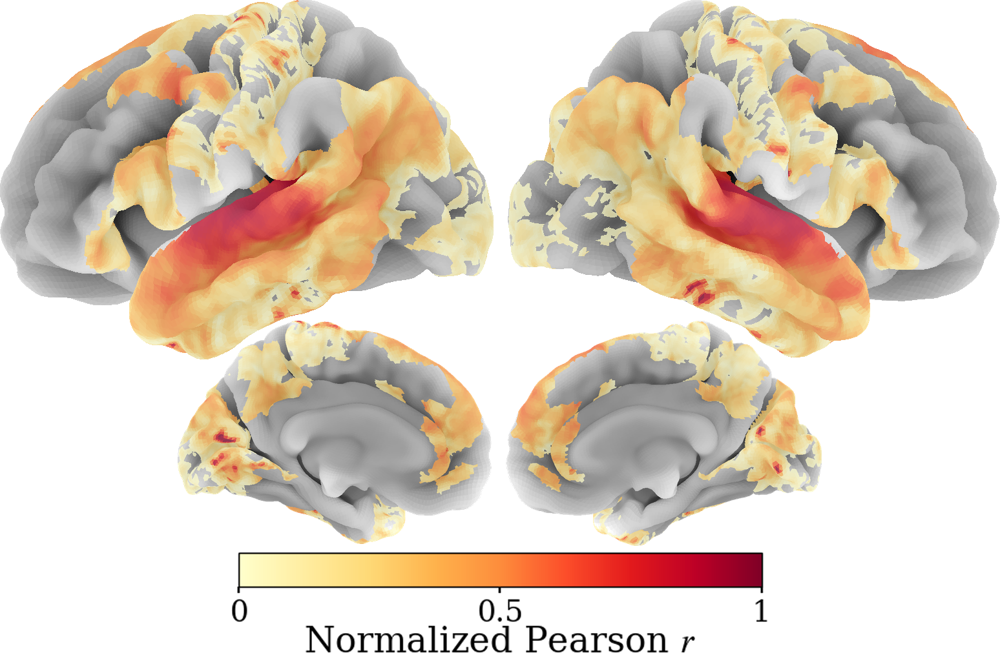
Fig 7Same listener, after ~10 min · normalized Pearson r, 0–1 (same scale as Fig 3).
Few-shot accuracy
Sharper across the language network.
A small per-person adjustment, tuned on ~10 minutes of their own listening, makes agreement rise and spread through the wider language network. Same model, same scale as Fig 3 — red marks the few-shot regime, not a different range.
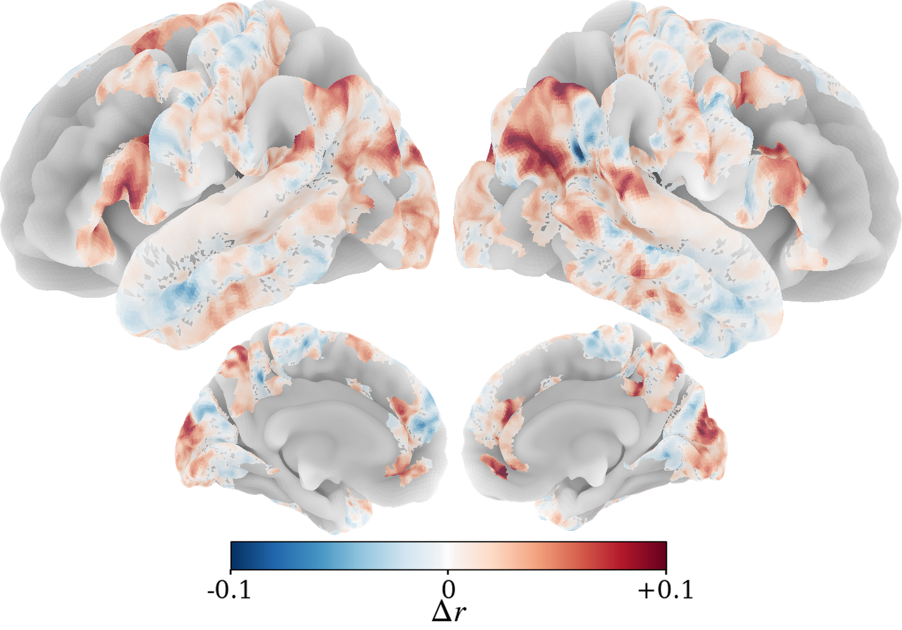
Fig 8Δr = few-shot − zero-shot, same listener, −0.1 to +0.1 · red ⇒ improved by the 10-min adjustment, blue ⇒ reduced.
Where ten minutes lands
The gain lands on the language network.
Differencing the two maps directly: the ten-minute adjustment improves the prediction (red) across higher-order language cortex — lateral frontal, temporal and inferior-parietal regions — exactly the cortex that differs most between individuals.
Auditory cortex, already captured zero-shot, is left essentially unchanged.
Across the regions that differ most between individuals, the ten-minute adjustment lifts accuracy everywhere it is measured — all at p<0.01 or better (paired one-sided t-tests). Both bars are the same RABBiT model, zero-shot versus few-shot.
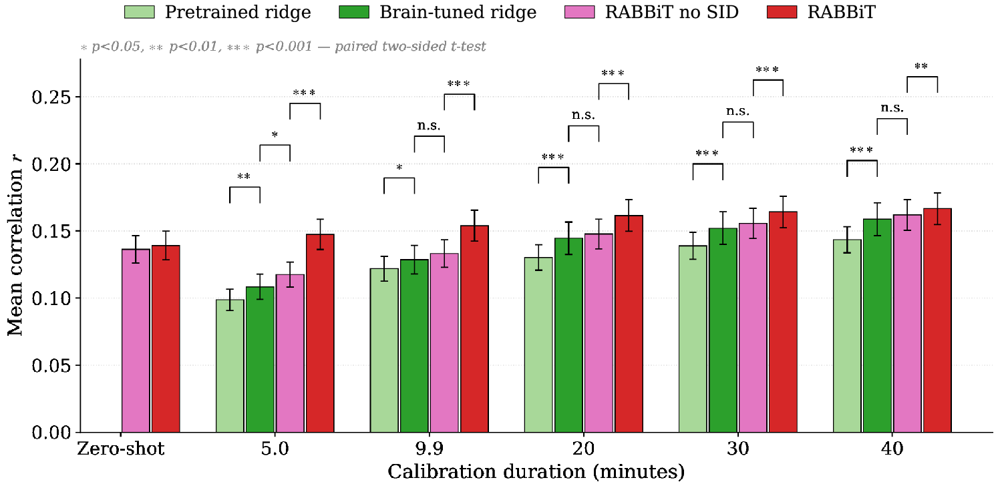
Fig 10Mean language-ROI accuracy vs calibration time · markers are paired t-tests.
vs per-voxel ridge
Beats ridge — for far less.
RABBiT's few-shot adaptation is already above its zero-shot at 5 minutes and stays above both ridge baselines through 40 minutes.
It does this while updating ~1000× fewer parameters per person (~115K vs ~108).
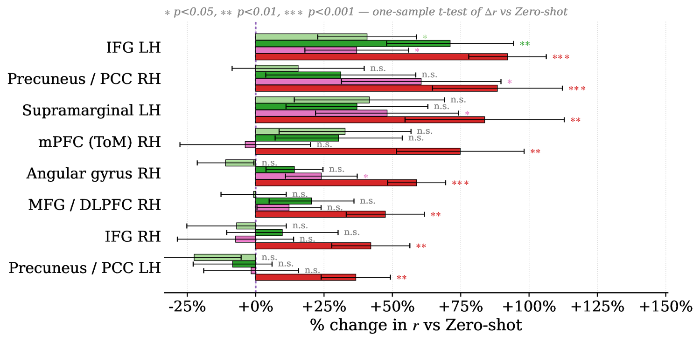
Fig 11Improvement over own zero-shot at ~10 min · ∗∗∗ vs zero-shot.
At ten minutes
Up to 100% better, region by region.
Relative to its own zero-shot, ~10 minutes lifts IFG, supramarginal, angular, MFG / DLPFC, mPFC and precuneus / PCC by ~30% to over 100% — the very regions the leave-one-out diagnostic (Fig 15) flags as individual.
And it matches per-voxel ridge on the same data, at ~1000× fewer parameters.
05How it works
Inside the model.
Two ideas do the work. One reads the speech stream the way cortex does — region by region. The other separates what everyone shares from what makes a brain individual, which is precisely what lets the same model serve the zero-shot and few-shot regimes above. Then two checks show which components are load-bearing, and why a few minutes of data help exactly where they do.
TBT
Temporal Brain Transformer
Region-specific attention over the speech stream.
Rather than fitting an independent readout for every voxel, RABBiT learns one query per cortical region. Each query attends across the speech sequence and decides which moments of audio matter for that region, producing a compact per-region representation $z_i$. 30 regions (15 bilateral HCP-MMP1 groupings on fsaverage6) replace millions of independent per-voxel weights.
Fig 12ROI query tokens attend to the speech-token sequence.
TBT · the readout
One query per region.
Each region's query qi is the search; the brain-tuned speech features are the keys and values. The softmax weights pick which moments of audio matter, and their weighted sum is that region's representation zi.
SID
Shared–Idiosyncratic Decomposition
What everyone shares + what makes a brain individual.
Each region's response is written as a shared population subspace ($\Phi_i$) plus a small per-person deviation ($\Delta_{i,s}$). The shared part is what drives the zero-shot prediction for anyone; the deviation is the small, structured difference that the few-shot step tunes for an individual. This split is exactly why one model covers both regimes — and why ~10 minutes of data is enough to adapt.
$\Phi_i$ is the shared basis (the population response subspace for region $i$); $\Delta_{i,s}$ is the per-person deviation basis (the only part updated during few-shot); $\pi_i, \rho_i$ are small heads that read out from the region representation $z_i$.
A brain-tuned speech model encodes the audio; the TBT routes it into per-region representations; the SID turns each into vertex-level fMRI — shared part for everyone, deviation part for the individual.
The whole pipeline is trained end-to-end on six participants of CNeuroMod Friends.
Why it works — what each piece buys you
Ablate a component, or leave a person out, and watch zero-shot accuracy move.
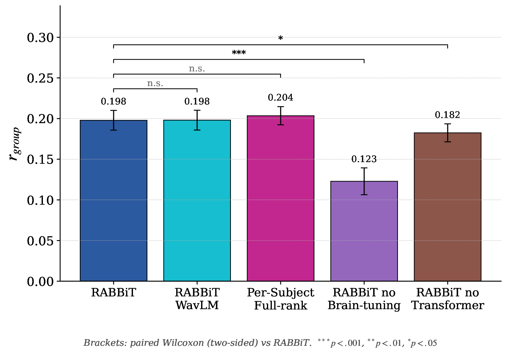
Fig 14Zero-shot accuracy as components are removed or swapped.
Ablations
Which pieces are load-bearing.
Removing brain-tuning of the speech backbone causes the largest drop — about 40% (r ≈ 0.20 → 0.12); removing the TBT also lowers it significantly.
The decomposition matches a per-subject full-rank readout — one independent weight per voxel — at ~5× fewer parameters, and wav2vec2 vs WavLM barely matters.
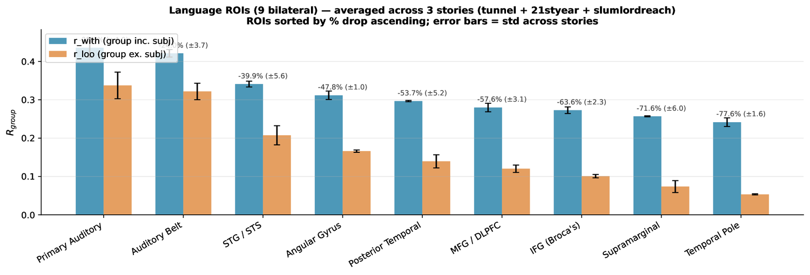
Fig 15Group average including (blue) vs excluding (orange) the listener.
The diagnostic
Why minutes help where they do.
Early auditory cortex barely changes (~20–25%) when a person is left out — that response is shared, so zero-shot already nails it. Higher-order language regions collapse — the temporal pole by ~78%.
Those regions are individual: a population average can't reach them, which is exactly where the few-shot step pays off.
Resources
Code, weights, demos.
Everything that goes with the paper. The code repo and demo notebook are
enough to reproduce inference on any released checkpoint; training scripts
and configs live alongside.
Release status. The paper PDF, arXiv preprint, code repository,
demo notebook, Hugging Face model cards, and pretrained checkpoint downloads will
all go public once the submission clears review. Until then, this page and the
live in-browser demo are the best way to explore RABBiT.
Cite this paper
BibTeX
If RABBiT is useful for your work, please cite it.
@inproceedings{moussa2026rabbit,
title = {RABBiT: Rapidly Adaptive {BOLD} Foundation Model via Brain-Tuning
for Accurate Zero-Shot and Few-Shot Prediction of
Speech-Elicited Responses in the Brain},
author = {Moussa, Omer and others},
booktitle = {Advances in Neural Information Processing Systems},
year = {2026},
note = {Under review}
}